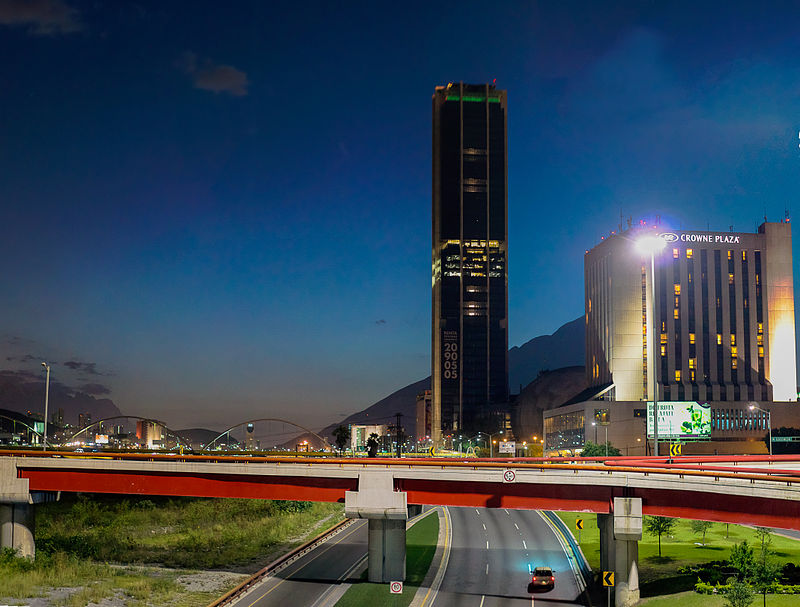
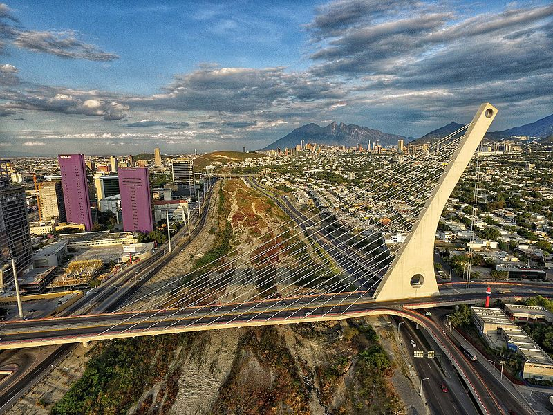
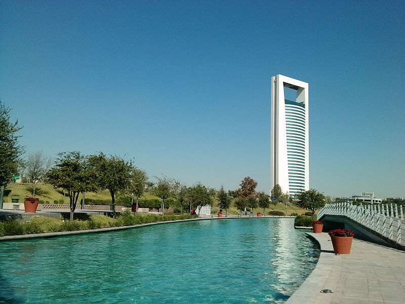

Aunada a su tradicional vocación industrial y de negocios, Monterrey está empezando a desarrollar una vocación turística ligada a sus atractivos naturales, a sus parques de diversiones y museos. La ciudad cuenta con una gran variedad de atractivos turísticos, debido a la combinación de sitios naturales y la modernidad de algunos sectores de la ciudad. Entre los lugares de mayor atractivo dentro de la ciudad están:
  